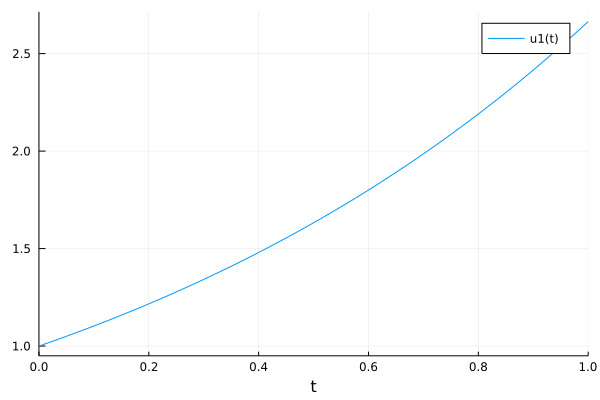
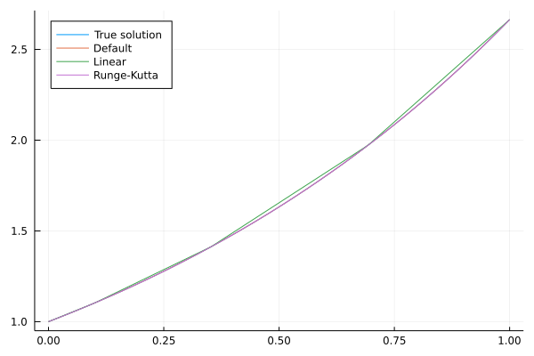
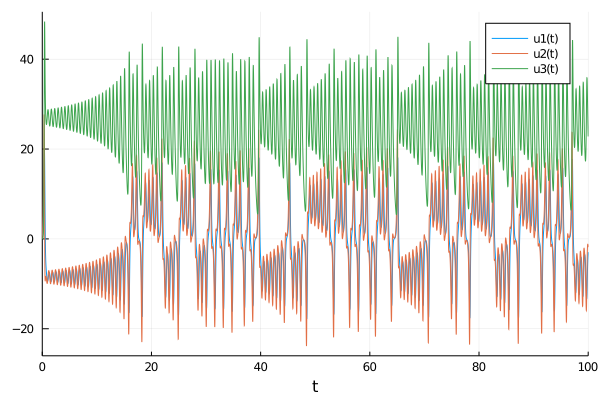
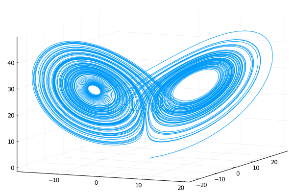
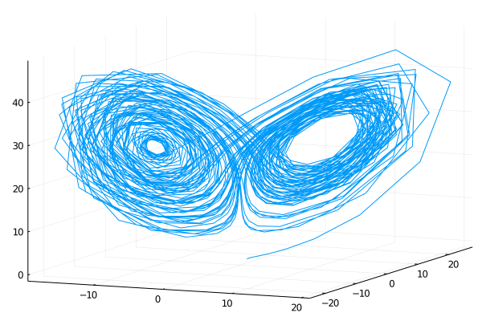
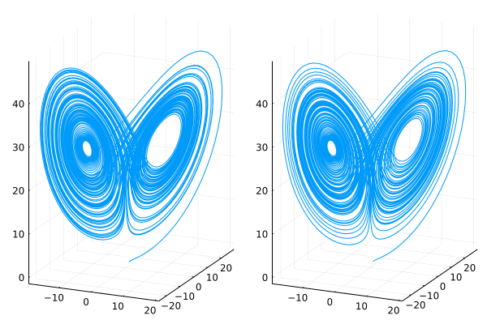

Julia package
To solve differential equations, we will use package DifferentialEquations.
Introduction
DifferentialEquations consider ODEs in the form
\[\dot u(t) = f(t, u(t), p(t))\]
with the initial condition $u(t_0)= u_0$. While $u$ is the solution, $p$ described external parameters.
We will start with a simple problem
\[\dot u(t) = 0.98u\]
with initial condition $u(0) = 1$. This has closed-form solution $u(t) = e^{0.98t}$. To solve this ODE by DifferentialEquations, we first need to create the problem prob by supplying function $f$, the initial point $u_0$ and the time interval $[t_0,t_1]$ to the constructor ODEProblem
using DifferentialEquations
f(u,p,t) = 0.98*u
u0 = 1.0
tspan = (0.0, 1.0)
prob = ODEProblem(f, u0, tspan)We can solve the ODE by
sol = solve(prob)retcode: Success
Interpolation: automatic order switching interpolation
t: 5-element Array{Float64,1}:
0.0
0.10042494449239292
0.35218603951893646
0.6934436028208104
1.0
u: 5-element Array{Float64,1}:
1.0
1.1034222047865465
1.4121908848175448
1.9730384275622996
2.664456142481451The first line specifies that the solution was successful. We can automatically check whether the solution was successful by sol.retcode == :Success. The second line specifies the interpolation method. Even though the solution was evaluated at only 5 points sol.t with values sol.u, the interpolation
using Plots
plot(sol)
The sol structure is heavily overloaded. It can be used to evaluate the solution $u$ at any time
sol(0.8)2.1902158127997695
The next exercise shows how to specify the interpolation technique and compares the resutlts.
When calling the solve function, we can specify the interpolation way. Solve the ODE with linear interpolation (dense=false) and the Runge-Kutta method of fourth order (RK4()). Plot the results and compare them with the default and original solutions.
Solution:
To compues the additional solutions, we add the arguments as specified above
sol2 = solve(prob, dense=false)
sol3 = solve(prob, RK4())For plotting, we create a discretization ts of the time interval and then plot the four functions
ts = collect(range(tspan[1], tspan[2], length=100))
plot(ts, t->exp(0.98*t), label="True solution", legend=:topleft)
plot!(ts, t->sol(t), label="Default")
plot!(ts, t->sol2(t), label="Linear")
plot!(ts, t->sol3(t), label="Runge-Kutta")
We see that all solutions are the same with the exception of the linear approximation.
Lorenz system
Lorenz system is a prime example of the butterfly effect in the chaos theory. There, a small changes in the initial conditions results in large changes after a long time. This effect was first described in 1961 during work on weather modelling.
The three-dimensional Lorenz system is described by the set of equations
\[\begin{aligned} \frac{\partial x}{\partial t} &= \sigma (y - x), \\ \frac{\partial y}{\partial t} &= x (\rho - z) - y, \\ \frac{\partial z}{\partial t} &= x y - \beta z. \end{aligned}\]
We define the right-hand side
function lorenz(u, p, t)
σ, ρ, β = p
x_t = σ*(u[2]-u[1])
y_t = u[1]*(ρ-u[3]) - u[2]
z_t = u[1]*u[2] - β*u[3]
return [x_t; y_t; z_t]
endThe parameters are saved in a tuple or array p. Since the right-hand side of the Lorenz system is a vector, we need to return a vector as well. Now, we compute the solution in the same way as before.
u0 = [1.0; 0.0; 0.0]
p = [10; 28; 8/3]
tspan = (0.0, 100.0)
prob = ODEProblem(lorenz, u0, tspan, p)
sol = solve(prob)Using the same function to plot
plot(sol)
results in two-dimensional graph of all coorinates. To plot 3D, we need to specify it
plt1 = plot(sol, vars=(1,2,3), label="")
We see again the power of interpolation. If we used linear interpolation (connected the points)
plot(sol, vars=(1,2,3), denseplot=false; label="")
we would obtain a much coarse graph. This shows the strength of the DifferentialEquations package. With a small computational effort, it is able to compute a good solution. Note that the last plotting call is equivalent to
traj = hcat(sol.u...)
plot(traj[1,:], traj[2,:], traj[3,:]; label="")In the introduction to this part, we mentioned the chaos theory. We will elaborate on this in the next exercise.
Consider the same setting as above but perturb the first parameter of p by the smallest possible value (with respect to the machine precision). Then solve the Lorenz system again and compare results by plotting the two trajectories next to each other.
Solution:
The machine precision can be obtained by eps(T), where T is the desired type. However, when we add this to p[1], we obtain the same number
p[1] + eps(eltype(p)) == p[1]true
The reason is that p[1] has value 10 and the sum exceeds the allowed number of valid digits and it is truncated back to 10. We therefore cheat a bit and manually modify the number
p0 = (10.000000000000001,28,8/3)Then we plot the graphs as before
prob0 = ODEProblem(lorenz, u0, tspan, p0)
sol0 = solve(prob0)
plt0 = plot(sol0, vars=(1,2,3), label="")
plot(plt1, plt0; layout=(1,2))
The solutions look obviously different. Comparing the terminal states of both solutions
hcat(sol(tspan[2]), sol0(tspan[2]))3×2 Array{Float64,2}:
-2.94542 -0.628467
-1.84189 -3.10333
22.7963 23.3035shows that they are different by a large margin. This raises a natural question.
Can we trust the solutions? Why?
Solution:
Unfortunately, we cannot. Numerical methods always introduce some errors by
- Rounding errors due to representing real numbers in machine precision.
- Discretization errors for continuous systems when the derivative is approximated by some kind of finite difference.
However, if the system itself is unstable in the way that an extremely small perturbation results in big differences in solutions, the numerical method even enhances these errors. The solution could be trusted on some small interval but not after it.
The next section will show a situation where we try to mitigate this possible effect by using mathematical formulas to compute the exact solution as long as possible. This delays the necessary discretization and may bring a better stability.